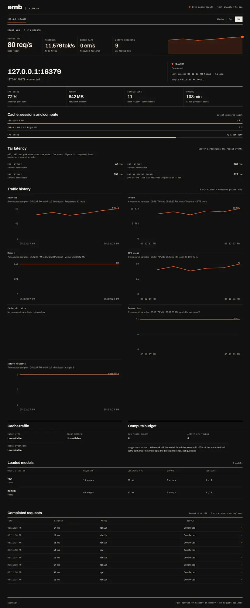

VIII.The sidekick
A read-only view of an emb node under load. The sidekick reads the server's own counters and stream, then draws requests, tokens, errors, in-flight work, cache and session pressure, per-model latency, memory and CPU as they move.
The sidekick is a dashboard for one emb node. It keeps five minutes of one-second samples in memory and needs no browser commands.
THE MONITOR · read-only · 1 SECOND POLL · 5 MINUTES IN MEMORY · no PAYLOADS
OPEN THE MONITOR
The sandbox serves a live instance at https://cli.emb.is/sidekick/. It watches the sandbox node that this site's demos use.
the node detail, under load

WHAT IT MEASURES
Requests and tokens per second, with a five-minute sparkline. Errors per second. In-flight requests: work the node has accepted and not yet finished. Cache hits, misses and evictions. Session pressure, which is how many model sessions are in use against how many the node holds.
Per model, the server's own p50, p95 and p99 latency sit beside an event-derived p95. The first three are the server percentiles the node reports. The event-derived p95 is computed by the monitor from completed-request events, so a gap between the two readings stays visible.
Memory, CPU and connection counts complete the page. Every reading comes from the node's EMB.INFO, EMB.STATS, EMB.MODELS and MONITOR replies. A measurement the node does not provide is shown as unavailable, never as zero.
WHY IT MATTERS UNDER LOAD
A dashboard is worth the most when the node is busy, which is when a page that polls the node on every redraw would add work to the thing it is measuring. The sidekick polls once per second and keeps the history in its own process, so redrawing a chart costs the node nothing.
Latency percentiles answer different questions. p50 is what a typical caller waits. p95 and p99 show the tail, which is where a timeout lives. The event-derived p95 is a second opinion from the request events, so one slow model does not hide behind a healthy average.
Cache and session pressure tell you where a slowdown comes from. A cache that stops hitting sends work back to the model. A session pool at its limit queues requests before they run. In-flight counts make that queue visible while it is happening.
WHAT IT DOES NOT DO
The monitor is read-only. It has no browser command endpoint, so selecting a node or a model changes the view and never the watched server. Request texts are not displayed.
Histories hold five minutes of one-second samples, in memory only. Request events are limited to five minutes or 4096 per node, the snapshot carries the most recent 128, and the browser table shows the newest eight.
The monitor sends X-Frame-Options: DENY, so it opens as its own page and this site links to it instead of framing it.
Run it beside a node with emb-sidekick -node 127.0.0.1:6379, or read the flags in the operations guide.